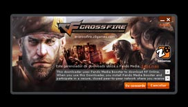
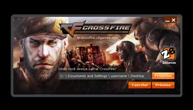
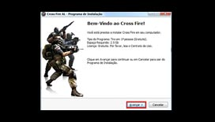
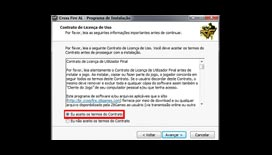
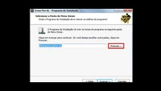
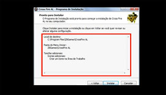

<!DOCTYPE html PUBLIC "-//W3C//DTD XHTML 1.0 Strict//EN" "http://www.w3.org/TR/xhtml1/DTD/xhtml1-strict.dtd">
<html xmlns="http://www.w3.org/1999/xhtml" lang="en-US"></html>
<head profile="http://gmpg.org/xfn/11">
  <meta http-equiv="X-UA-Compatible" content="IE=edge"/>
  <meta http-equiv="Content-Type" content="text/html; charset=UTF-8"/>
  <title>Getting Started «  Crossfire Español</title>
  <link rel="stylesheet" href="http://es.crossfire.z8games.com/wp-content/themes/default_theme/css/vendor/normalize.css" type="text/css" media="screen"/>
  <link rel="stylesheet" href="http://es.crossfire.z8games.com/wp-content/themes/default_theme/css/vendor/reset.css" type="text/css" media="screen"/>
  <link rel="shortcut icon" href="http://images.z8games.com/cfes/wp-content/themes/cfes/favicon.ico"/>
  <link rel="alternate" type="application/rss+xml" title="Crossfire Espanol RSS Feed" href="http://es.crossfire.z8games.com/feed/"/>
  <link rel="alternate" type="application/atom+xml" title="Crossfire Espanol Atom Feed" href="http://es.crossfire.z8games.com/feed/atom/"/>
  <link rel="pingback" href="http://es.crossfire.z8games.com/xmlrpc.php"/>
  <script src="http://es.crossfire.z8games.com/wp-content/themes/default_theme/js/vendor/modernizr-2.6.2.min.js"></script>
  <script src="http://es.crossfire.z8games.com/wp-content/themes/default_theme/js/vendor/selectivizr-min.js"></script>
  <link id="js_composer_front-css" rel="stylesheet" href="http://es.crossfire.z8games.com/wp-content/plugins/js_composer/assets/css/js_composer_front.css?ver=3.7.4" type="text/css" media="all"/>
  <link id="js_composer_custom_css-css" rel="stylesheet" href="http://es.crossfire.z8games.com/wp-content/uploads/js_composer/custom.css?ver=3.7.4" type="text/css" media="screen"/>
  <link id="dt_colorbox_modal_style-css" rel="stylesheet" href="http://images.z8games.com/cfes/wp-content/themes/default_theme/css/colorbox.css?ver=3.8.1" type="text/css" media="all"/>
  <link id="dt_jquery_ui_style-css" rel="stylesheet" href="http://images.z8games.com/cfes/wp-content/themes/default_theme/css/jquery-ui.min.css?ver=3.8.1" type="text/css" media="all"/>
  <link id="dt_jscrollpane_style-css" rel="stylesheet" href="http://images.z8games.com/cfes/wp-content/themes/default_theme/css/jquery.jscrollpane.css?ver=3.8.1" type="text/css" media="all"/>
  <link id="dt_slippry_style-css" rel="stylesheet" href="http://images.z8games.com/cfes/wp-content/themes/default_theme/css/jquery.slippry.css?ver=3.8.1" type="text/css" media="all"/>
  <link id="dt_module_content_style-css" rel="stylesheet" href="http://images.z8games.com/cfes/wp-content/themes/default_theme/css/content/module_content.css?ver=3.8.1" type="text/css" media="all"/>
  <link id="dt_module_front_style-css" rel="stylesheet" href="http://images.z8games.com/cfes/wp-content/themes/default_theme/css/module/module_front.css?ver=3.8.1" type="text/css" media="all"/>
  <link id="dt_module_shortcuts_style-css" rel="stylesheet" href="http://es.crossfire.z8games.com/wp-content/themes/default_theme/css/module/post_shortcuts.css?ver=3.8.1" type="text/css" media="all"/>
  <link id="dt_module_social_media_style-css" rel="stylesheet" href="http://es.crossfire.z8games.com/wp-content/themes/default_theme/css/module/social_media.css?ver=3.8.1" type="text/css" media="all"/>
  <link id="dt_video_style-css" rel="stylesheet" href="http://images.z8games.com/cfes/wp-content/themes/default_theme/css/video.css?ver=3.8.1" type="text/css" media="all"/>
  <link id="dt_module_video_style-css" rel="stylesheet" href="http://images.z8games.com/cfes/wp-content/themes/default_theme/css/module/video.css?ver=3.8.1" type="text/css" media="all"/>
  <link id="dt_module_post_content_style-css" rel="stylesheet" href="http://es.crossfire.z8games.com/wp-content/themes/default_theme/css/module/post_content.css?ver=3.8.1" type="text/css" media="all"/>
  <link id="dt_module_post_tabs_style-css" rel="stylesheet" href="http://es.crossfire.z8games.com/wp-content/themes/default_theme/css/module/post_tabs.css?ver=3.8.1" type="text/css" media="all"/>
  <link rel="stylesheet" href="http://fonts.googleapis.com/css?family=Open+Sans:400,600,700" type="text/css"/>
  <link id="cfes_main_style-css" rel="stylesheet" href="http://images.z8games.com/cfes/wp-content/themes/cfes/css/main.css?ver=3.8.1" type="text/css" media="all"/>
  <link id="cfes_jqueryu_style-css" rel="stylesheet" href="http://images.z8games.com/cfes/wp-content/themes/cfes/css/custom-theme/jquery-ui-1.10.4.custom.css?ver=3.8.1" type="text/css" media="all"/>
  <link id="dt_slider_style-css" rel="stylesheet" href="http://images.z8games.com/cfes/wp-content/themes/default_theme/css/slider.css?ver=3.8.1" type="text/css" media="all"/>
  <link id="dt_child_stylesheet-css" rel="stylesheet" href="http://es.crossfire.z8games.com/wp-content/themes/cfes/style.css?ver=3.8.1" type="text/css" media="all"/>
  <link id="dt_user_system_style-css" rel="stylesheet" href="http://es.crossfire.z8games.com/wp-content/themes/default_theme/css/users/system.css?ver=3.8.1" type="text/css" media="all"/>
  <link href="css/newStyles.css" rel="stylesheet"/>
</head>
<body>
  <div id="newContent">
    <ul class="tabs tab-count-4">
      <li class="tab active"><a href="#" class="tab-link">Getting Started</a></li>
      <li class="tab"><a href="interface-1.html" class="tab-link">Interface</a></li>
      <li class="tab"><a href="control-1.html" class="tab-link">Control</a></li>
      <li class="tab last"><a href="setting-1.html" class="tab-link">Setting</a></li>
    </ul>
    <ul class="subtabs tab-count-4">
      <li class="subtab"><a href="getting-started-1.html" class="subtab-link">Registro</a></li>
      <li class="subtab active"><a href="#" class="subtab-link">Inicio Del Juego</a></li>
      <li class="subtab"><a href="getting-started-3.html" class="subtab-link">Inicio Del Juego</a></li>
      <li class="subtab"><a href="getting-started-4.html" class="subtab-link">Deinstalar</a></li>
    </ul>
    <ul class="article-list">
      <li class="article-list-item">
        <div class="article-list-text">
          <h2 class="article-list-item-title">1er PASO</h2>
          <p>Descarga: Después de haber realizado su registro, será conducido a una nueva página <a href="http://es.crossfire.z8games.com/downloads3.aspx">donde</a> se le informará de cuáles son los requisitos mínimos para jugar a Cross Fire y dispondrá de un enlace que le permitirá descargar el juego en español.</p>
        </div>
      </li>
      <li class="article-list-item">
        <div class="article-list-text">
          <h2 class="article-list-item-title">2º PASO</h2>
          <p>Haga clic en la opción "Descargar Cross Fire". A continuación se abrirá una nueva ventana con los Términos de Uso de Pando Media Booster</p>
        </div>
      </li>
      <li class="article-list-item">
        <div class="article-list-text">
          <h2 class="article-list-item-title">3º PASO</h2>
          <p>Acepte los Términos de Uso y elija la ubicación donde desee guardar los archivos de descarga.</p>
        </div>
      </li>
      <li class="article-list-item">
        <div class="article-list-text">
          <h2 class="article-list-item-title">4º PASO</h2>
          <p>Después de la descarga, se abrirá una ventana con información básica acerca de Cross Fire, incluyendo el tamaño del juego. Asegúrese de disponer de suficiente memoria disponible en su disco duro. Haga clic en "Siguiente".</p>
        </div>
      </li>
      <li class="article-list-item">
        <div class="article-list-text">
          <h2 class="article-list-item-title">5º PASO</h2>
          <p>Después de hacer clic en "Siguiente", deberá leer y aceptar los Términos de Uso y la Licencia de TERA. Marque la casilla “Acepto los Términos del Contrato” y haga clic en “Siguiente”.</p>
        </div>
      </li>
      <li class="article-list-item">
        <div class="article-list-text">
          <h2 class="article-list-item-title">6º PASO</h2>
          <p>Descarga: Una vez que haya hecho clic en "Siguiente" se le pedirá que seleccione una ubicación de destino donde desee instalar el juego. Pulse el botón “Buscar” y seleccione dónde quiere instalar Cross Fire.</p>
        </div>
      </li>
      <li class="article-list-item">
        <div class="article-list-text">
          <h2 class="article-list-item-title">7º PASO</h2>
          <p>A continuación, el proceso de instalación le pedirá que especifique dónde quiere crear el icono de acceso a Cross Fire. Si está de acuerdo con la ubicación por defecto, haga clic en “Siguiente”. Si desea especificar una ubicación alternativa, haga clic en “Buscar” y elija la nueva ubicación del icono de acceso. Una vez esté satisfecho con la ubicación, haga clic en “Siguiente”.</p>
        </div>
      </li>
      <li class="article-list-item">
        <div class="article-list-text">
          <h2 class="article-list-item-title">8º PASO</h2>
          <p>En el siguiente paso se le preguntará si desea que Cross Fire cree accesos directos en el Escritorio y en el Menú de Inicio. Seleccione las opciones que desee y haga clic en “Siguiente”.</p>
        </div>
      </li>
      <li class="article-list-item">
        <div class="article-list-text">
          <h2 class="article-list-item-title">9º PASO</h2>
          <p>La siguiente ventana le mostrará un resumen de la ubicación de los archivos del juego y el icono de acceso y le dará la opción de modificarlos si no está de acuerdo. En caso de que todo esté correcto, haga clic en “Instalar” para comenzar la instalación.</p>
        </div>
      </li>
      <li class="article-list-item">
        <div class="article-list-text">
          <h2 class="article-list-item-title">10º PASO</h2>
          <p>Una vez el programa termine de instalarse, aparecerá la ventana indicando el fin de la instalación. Simplemente haga clic en “Terminar”.</p>
        </div>
      </li>
    </ul>
  </div>
</body>